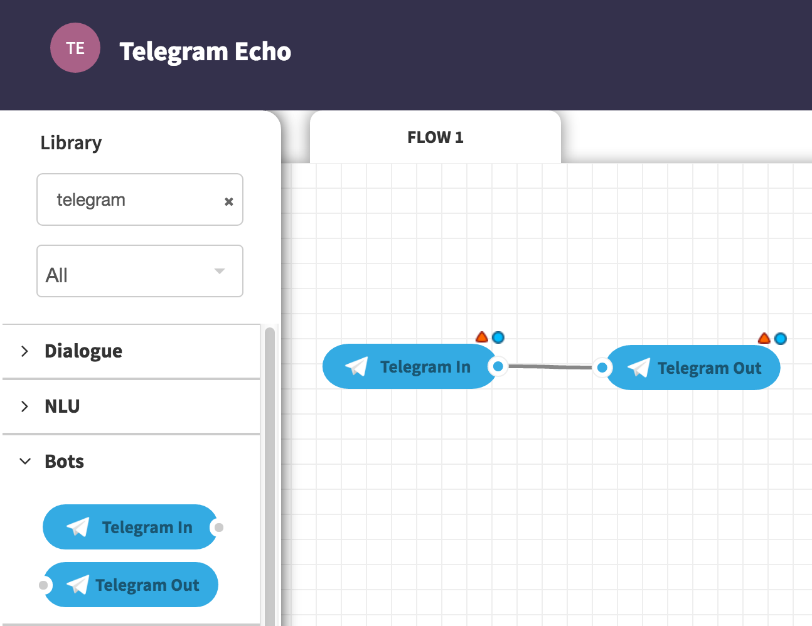

Telegram Bot Tutorials¶
Todo
This is how to write a TODO
In this tutorial we’ll show how to program a simple inline bot for Telegram using the Yelp API in ChatFlow. The following video shows the final bot:
A simple Echo Bot¶
First let’s create a new bot by talking to the Bot Father:
{kind=link}
Bot Father will give you a token to control this bot. Let’s save it and drag the Telegram In and Telegram Out nodes to ChatFlow canvas:
{kind=link}
Double click the Telegram nodes and input the access tokens. Now you can talk with the bot on the Telegram messenger. Here’s a full video for it:
Setting up Inline Bot¶
In Telegram bots can either take direct messages, or accept inline mentions. Inline bots have quite some merits:
- users stay/focus on current chat window instead of jumping back and forth between apps
- inline bots give a more compact representation of results for fast browsing and selection
In the following we’ll introduce an inline Yelp bot. But first of all, let’s set up the bot to be inline-ready.
Set inline status¶
Simply send the /setinline command to Bot Father:

Then select your bot and set inline status:
Set inline location awareness¶
Telegram also allows bots to request your location in GPS coordinates. We can
enable this with the /setinlinegeo command to Bot Father:

Now next time the bot is mentioned, it will request user to share GPS location. Even on desktop browser it can still get rough location coordinates.
An inline Yelp Bot¶
We want to program an inline Yelp bot that supports the following two inline mention modes:
- “seafood near seattle” –> Bot will search Yelp seafood near Seattle.
- “seafood” –> Bot will search Yelp seafood using phone’s GPS location.
But it won’t accept direct messages. The following is a demo:
The flow¶
The following is a screenshot of the flow and here is the flow file.
It is also a sample project from “CREATE NEW APP” -> “Use a sample project”.

Feel free to import it into your own project and play with it. In order to make it work, you’ll need:
- Bot access token (already covered in A simple Echo Bot )
- Yelp app credentials, including Consumer Key, Consumer Secret, Token and Token Secret.
In this flow we do not accept direct messages but just inline mentions. We assume
very simple input structure, taken care of by the Dumb NLU for Inline Query node:
1 2 3 4 5 6 7 8 9 10 11 12 13 14 15 16 17 18 19 20 21 22 23 24 25 26 27 28 29 | var query = msg.payload.trim();
if (!query)
// don't output empty msg
return;
var splits = query.split(" near ");
var split_len = splits.length;
if (!msg.NLU) {
msg.NLU = {};
}
if (split_len == 1) {
msg.NLU.business = splits[0];
} else {
// "chinese food near downtown seattle"
msg.NLU.business = splits[0];
msg.NLU.address = splits[1];
}
try {
if (msg.telegram.inline_query.location.latitude) {
// we got GPS coordinates from mobile
msg.NLU.ll = msg.telegram.inline_query.location.latitude+","+
msg.telegram.inline_query.location.longitude;
}
} catch (err) {}
return msg;
|
Once we get the business type and address or ll (latitude & longitude),
we can go ahead and search Yelp. The final result is sent throw the Send Result
node:
1 2 3 4 5 6 7 8 9 10 11 12 13 14 15 16 17 18 19 20 21 22 23 24 25 26 27 28 29 30 31 32 33 34 35 36 | var results = msg.payload.businesses;
if (results.length > 0) {
var responses = [];
for (var i=0; i<results.length; i++) {
var result = results[i];
var categories = [];
for (var j=0; j<result.categories.length; j++) {
categories.push(result.categories[j][0]);
}
responses.push({
type: "venue",
id: result.id,
title: result.name + " (" + categories.join(", ") + ")",
thumb_url: result.image_url,
latitude: result.location.coordinate.latitude,
longitude: result.location.coordinate.longitude,
address: result.review_count + " reviews. Rating: " + result.rating + ". \n" +
result.location.display_address.join(" ")
});
}
msg.payload = responses;
return msg;
} else {
msg.payload = [{
type: "article",
id: "no-result",
title: "No Yelp Result Found",
input_message_content: {
message_text: 'e.g., "dinner near downtown Chicago"'
},
description: 'e.g., "dinner near downtown Chicago"'
}];
return msg;
}
|
The result, encoded in msg.payload, is a list of venues that’ll be sent via
the Telegram SendVenue method.
This Yelp Bot so far is very limited in understanding human language, yet it also does not support direct messages. To improve it, you can take a look at the full tutorial of Extended Example: A conversational Yelp bot.